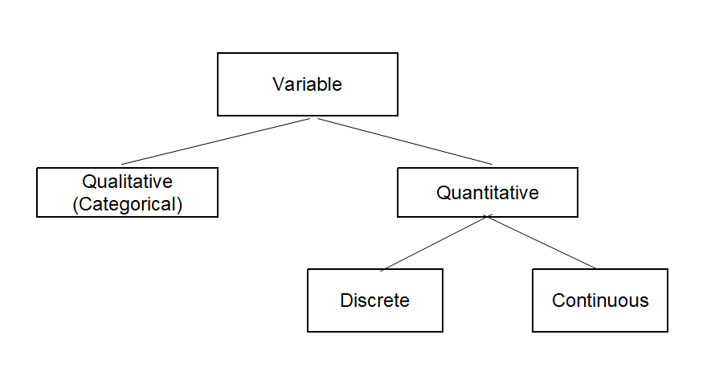

In this chapter, we introduce overall structure of this book.
In section 1.1, we introduce what Statistics and Data Science are.
In section 1.2, we introduce two important terminologies, population and sample, and also two major interrelated branches of statistics: descriptive statistics and inferential statistics.
In section 1.3, we introduce how to classify variable and data by its type. Knowing the data type can help you choose the correct statistical method.
In section 1.4, we introduce softwares for data processing and statistical analysis.
The invention of letters has led human to record of an era which is now called a history. Because of the history, we are able to know which country appeared where, when, how large its territory is, how much population and how many households they have. The land size of a country, population, and the number of households are typical examples of statistics for a country which have been used for more than thousands of years until now. These statistics were essential for a ruler to govern a country. The origin of the word “statistics” comes from the word “state” which implies a tool for governing a country. In ancient Egypt, Greece and Rome, data such as population and farmland area were made and used for the management of their country.
In the 8th to 13th century, the concept of probability and inference was introduced. Arab mathematicians Al-Khalil (717–786) wrote a book which describes permutations and combinations, to list all possible Arabic words with and without vowels. Al-Kindi (801–873) and later Arab cryptographers developed the early statistical inference for decoding encrypted messages. Ibn Adlan (1187–1268) later made an important contribution, on the use of sample size in frequency analysis.
In the 17th to the early 19th century, the mathematical foundations of modern statistics were laid with the development of the probability theory by Gerolamo Cardano, Blaise Pascal and Pierre de Fermat. Mathematical probability theory arose from the study of games of chance, although the concept of probability was already examined in medieval law by philosophers such as Juan Caramuel. The method of least squares was first described by Adrien-Marie Legendre in 1805.
In the late 19th century, Francis Galton and Karl Pearson transformed statistics into a rigorous
mathematical discipline used for analysis, not only in science, but also in industry and politics. Galton introduced the concepts of standard deviation, correlation, regression analysis and the application of these methods to the study of the variety of human characteristics such as height, weight, eyelash length among others. Pearson developed the product-moment correlation coefficient and the method of moments for the fitting of distributions to samples.
In the early 20th century, Ronald Fisher wrote the textbooks that were to define the academic discipline at universities around the world. Fisher's most important publications were his 1918 seminal paper, “The Correlation between Relatives on the Supposition of Mendelian Inheritance” which was the first to use the statistical term, variance. He contributed with his classic 1925 work “Statistical Methods for Research Workers” and 1935 work “The Design of Experiments” which developed rigorous design of experiment models. He originated the concepts of sufficiency, ancillary statistics, Fisher's linear discriminator and Fisher information. He applied statistics to various biological concepts such as Fisher's principle. In the 1930s, Egon Pearson and Jerzy Neyman introduced the concepts of "Type II" error, power of a test and confidence intervals. Jerzy Neyman showed that stratified random sampling was in general a better method of estimation than quota sampling.
Today, statistical methods are applied in all fields that involve decision making, for making accurate inferences from a collated body of data and for making decisions in the face of uncertainty based on statistical methodology. The use of modern computers has expedited large-scale statistical computations and has also made possible new methods that are impractical to perform manually. Modern statistics is the discipline that efficiently collects data, summarizes data and analyzes it to make scientific decisions using various probabilistic models for decision making in uncertain situations.
Statistics
Statistics is the discipline that efficiently collects data, summarizes data, analyzes data for making accurate inferences and making decisions in the face of uncertainty based on various probabilistic models.
Making decisions about uncertain situations in which statistics can help, appears in many parts of our society. Statistics have a wide variety of applications in various fields of society such as follows:
- A company predicts sales for the next year based on past sales and other data.
- The government establishes long-term and short-term economic development plans through statistical analysis based on economic indicators such as price indexes.
- Media organizations use sample surveys to predict the winners of the election.
- Test the efficacy of the newly developed drug by a pharmaceutical company.
- Examine whether there is a difference in the probability of lung cancer among smokers and non-smokers.
- Study the relationship between salt intake and hypertension.
- The superiority of new military equipment developed by the military is compared with that of the past.
- Statistical quality control techniques are used to improve the quality of products produced in factories.
Data Science
Modern digital computers, first developed in 1946 by John Eckert and John Mockley of the University of Pennsylvania, began to be applied to reality in the 1960s and have made tremendous progress in the past half century and brought many changes in our society. In the 1980s, with the development of personal computer (PC) and communication technology, main frame computers started to connect each other and then PCs were connected to the main frame computers using internet. In the 2000s, a mobile phone called a ‘smartphone’, which is combination of computer and traditional telephone was created and it was connected to computers via wired and wireless network technologies. Nowadays, almost all kinds of computers and mobile phones around the world have been connected with high speed internet that brings radical changes to our society.
The development of computer and communication technologies has been intensified recently, creating the artificial intelligence (AI) that surpasses human intelligence and the Internet of Things (IoT) in which all electronic devices are connected to computers via the Internet. A society which utilizes the AI and the IoT will be radically different from the present, such as an automatic car, a robot doctor and a robot teacher, and it is called the fourth industrial revolution society.
The development of these technologies has created massive data, simply called ‘Big Data’, that were unimaginable in the past.
Typical examples of the big data include data from Google's search records, social media messages by mobile phones,
web logs by internet connections, and telephone records of global telecom companies. The big data is expected to grow and increase exponentially in the future and the hyper-forecasting is also expected to be possible. The success or failure of each individual, group, company and even country would depend on how to utilize the big data efficiently.
The analysis of the big data that emerged this century is so enormous and diverse in the amount of data that can not be fully utilized just by traditional statistical approaches. For the analysis and utilization of the big data, theories of statistics, computer science, mathematics, management or related disciplines must also be applied simultaneously. Data Science is a new area of study in which statistics, mathematics, computer science and other disciplines are fused to analyze and utilize the big data that emerged this century.
Data Science
Data science is a new area of study in which statistics, mathematics, computer science and other disciplines are fused to analyze and utilize the big data.
There are many examples of data science that analyze big data and apply it to reality.
- By analyzing questions about buying cars on Google's search engine, a car sales company was able to predict the number of car models to be sold next month in the United States.
- A Venezuelan food chain company achieved a 30% increase in sales by analyzing the data from each branch that had been distributed, improving inventory management and establishing a corresponding product sales strategy.
- An online shopping mall analyzed web logs to understand the taste of members' customers and
what products they were interested in, and customized advertisements to each customer who increased sales.
- An oil exploration company analyzed tera bytes of geological data, raising the success rate of oil drilling.
- An insurance company in South Africa analyzed the big data on claims for existing insurance and implemented an algorithm to find possible cases of insurance fraud. The company used it to uncover many insurance frauds and even large insurance fraud organizations.
- A university in the U.S. analyzed data which were generated when students clicked on the system in an online class to monitor each student's learning performance. The university were able to propose class contents tailored to the student's understanding and to suggest subjects to be taken in the future. As a result, the degree acquisition rate has improved a lot.
Methodologies that are used in the analysis of big data include many traditional statistical methods such as estimation, testing hypothesis, multivariate statistical analysis and linear model. Recent theories in mathematics such as neural network, supporting vector machines and recent theories in computer science such as distributed computing, machine learning, artificial intelligence are also used. Since the Data Science is a fusion of studies, understanding of several disciplines is not easy to study, but it would be feasible in general for those who have talent on mathematics. For those who studied the Data Science could be leaders of the fourth industrial revolution society.
This book introduces not only fundamental statistical theories for data analysis, but also introduces a statistical software 『eStat』 to analyze data which is essential in data science.
This book is written for an introductory of Statistics and Data Science, focused on visualization and summary of data and traditional statistical methods by using a computer software 『eStat』.
All statistical methods are dealing with numbers or characters which is called a set of data. This set of data can be a whole set of data we are interested in or a part of data depending on a problem. If we make a decision using the whole set of data which we are interested in, the set of data is called a population. It is often very difficult or impossible to obtain the whole set of data in the population. In order to study characteristics of the population, if some number of data are extracted from the population, it is called a sample.
<Figure 1.2.1> Relationship between population and sample
Population and Sample
Population is a whole set of data which we are interested in.
Sample is some number of data extracted from the population.
There are two main fields where statistical methods are applied. The first field is an example of analyzing the population of a country such as gender, age, and occupation. In this case, we study how to effectively visualize and summarize data in order to understand the characteristics of the population better. These methods of visualizing and summarizing data are called descriptive statistics. The second field is how to infer characteristics of a population using a sample or how to test hypothesis on the population characteristics using a sample. These methods are called inferential statistics.
Descriptive Statistics and Inferential Statistics
Descriptive Statistics is a method which visualizes and summarize a set of data in order to understand characteristics of data. The data can be either a population or a sample.
Inferential Statistics is a method which infers characteristics of a population using the sample data or tests hypothesis on the population characteristics using the sample data.
Example 1.2.1
The voting result for the 2016 United States Presidential Election is summarized as the following table. What field of statistics is this?
Candidate
Votes
%
Electral vote
Donald John Trump (Republican)
62,984,828
46.09%
304
Hillary Diane Clinton (Democratic)
65,853,514
48.18%
227
Gary Earl Johnson (Libertarian)
4,489,341
3.28%
0
Jill Ellen Stein (Green)
1,457,218
1.07%
0
David Evan McMullin (Independent)
731,991
0.54%
0
Darrell Lane Castle (Constitution)
203,090
0.15%
0
Gloria Estela La Riva (Socialism)
74,401
0.05%
0
Answer
This study is a descriptive statistics. It is a summary of the votes cast by U.S. voters in the 2016 presidential election. No inferences are made.
Example 1.2.2
The CNN poll was conducted from May 7, 2020 to May 10, 2020 for the 2020 United States Presidential Election
by using a sample of 1001 registered voters. The result of poll was as follows. Margin of error = +/-4 percentage points.
What field of statistics is this?
Candidate
%
Donald John Trump (Republican)
46%
Joe Biden (Democratic)
51%
Answer
This study is an inferential statistics. It is a summary of the CNN poll to predict the 2020 election
by using a sample of 1001 U.S. registered voters .
In order to study the Data Science in depth, additional study for advanced theories in Statistics,
Mathematics and Computer Science is necessary. A computer software is essential for practicing
Data Science, but it is not easy to learn a high level statistical software which requires understanding
of a computer language. Authors have developed a web based software called 『eStat』 which has user
friendly interface especially for beginners. 『eStat』 also includes many useful dynamic graphical tools
for visualizing data and many simulation experiments to explain complicated statistical theories.
All theories of each chapter in this book can be practiced using 『eStat』.
Table 1.2.1 shows the composition of this book.
Table 1.2.1 Composition of this book
Chapter 1. Statistics and Data Science
Chapter 7. Testing Hypothesis for Single Population
Chapter 2. Data Visualization of Qualitative Data
Chapter 8. Testing Hypothesis for Two Populations
Chapter 3. Data Visualization of Quantitative Data
Chapter 9. Testing Hypothesis for Several Populations (ANOVA)
Chapter 4. Data Summary with Table and Measure
Chapter 10. Nonparametric Testing Hypothesis
Chapter 5. Probability Distribution Model of Data
Chapter 11. Testing Hypothesis for Categorical Data
Chapter 6. Sampling Distribution and Estimation
Chapter 12. Correlation and Regression Analysis
Chapters 2, 3, and 4 of this book discuss methods of the descriptive statistics. Chapter 2 discusses visualizations of Qualitative Data such as bar graph, pie chart, band chart, and line graph. Chapter 3 discusses visualizations of quantitative data such as histogram, stem and leaf plot, box plot, and scatter plot. Chapter 4 introduces methods of data summary by using tables and measures. Any middle school student or more are able to study these chapters
Chapters 5 to 12 of this book describe methods of the inferential statistics. Chapter 5 introduces concept of probability and the probability distribution models for both discrete and continuous data such as Binomial, Poisson, Hypergeometric and Normal distribution. Chapter 6 discusses relationship between sample and population, and explains the sampling distribution of the sample statistics. It introduces the estimation of the population parameters using the sampling distributions. These chapters are fundamentals for the inferential statistics.
Chapters 7 to 9 describe the parametric hypothesis tests for continuous data. Chapter 7 discusses the testing hypothesis for parameters of single population such as population mean, population variance and population proportion. Chapter 8 discusses the testing hypothesis for parameters of two populations such as two population means, two population variances and two population proportions. Chapter 9 discusses the testing hypothesis for parameters of several populations such as the analysis of variances.
Chapter 10 describes the nonparametric hypothesis test for continuous or ordinal data which includes tests for single location parameter, two location parameters and several location parameters. Chapter 11 describes the testing hypothesis for categorical data which includes the goodness of fit test and the independence test.
Chapter 12 describes the correlation analysis and the regression analysis of two continuous variables and then introduces the multiple regression model.
This book is intended to be used for a course of two semesters in introductory statistics and data science. In this case, Chapter 1 to Chapter 7 can be covered for the first semester and Chapter 8 to 9 for the second semester. If it is a single semester course of introductory statistics, it is recommended to study from Chapter 1 to Chapter 5, sections of 6.1, 6.2, 7.1, 8.1, 9.1, and then 12.1. 『eStat』 is so helpful for teaching/learning statistics, for example, students do not need to spend much time for studying the probability distributions as they do in the old textbooks by looking tables at the back. Therefore, students are able to study various statistical methods by using 『eStat』 within a single semester.
Data are values or characters which are observed or measured on interesting characteristics from one person or object to another. The characteristic that varies from one person or object to another is called a variable. For example, if you examined gender and height for college students, there are two variables, gender and height. A measurement for gender can be in the form of 'Male' or 'Female' and its data can be 'Female', 'Male', ‘Female’, ... , etc which are a collection of characters. A measurement for height can be 180cm or 170cm and its data are a collection of numerical numbers such as 180cm, 165cm, 158cm, 175cm, ... , etc.
Variables such as gender, marital status, and eye color are called qualitative variables, also called categorical variables which yield non-numerical qualitative data or Qualitative Data. Variables such as height, weight, and years of education are called quantitative variables which yield numerical quantitative data. Values of a qualitative variable are sometimes coded with numbers, for example, zip codes which represent geographical locations. We can not do arithmetic with such numbers as zip codes, in contrast to those of a quantitative variable.
Quantitative variables can be classified as either discrete or continuous. A discrete variable is a variable whose possible values can be countable which imply either finite or countably infinite. A discrete variable usually involves a count of something, such as the number of cars owned by a family, or the number of students in an introductory statistics class. A continuous variable is a variable whose possible values are uncountable real numbers. Typically, a continuous variable involves a measurement of something, such as the age of a person, the weight of a newborn baby, or the fuel mileage of a car. If we measure the height of a student, we usually write it with an integer value such as 180cm which looks like a finite number. But the height is not a discrete variable, because 180cm is an approximation of actual real number such as 180.123456 and therefore the height is a continuous variable.
Quantitative data can be transformed to categorical data by dividing all possible values of a quantitative variable into non-overlapped intervals. For example, age data can be transformed to categorical data by using a transformation such as ‘less than 30’, ‘30 ~ <40)’, ‘40 ~ <60’, ‘greater than 60’.
Types of variables are summarized graphically in <Figure 1.3.1> and verbally in the following definition
Variable
Variable: A characteristic that varies from one person or object to another.
Qualitative variable (Categorical variable): A nonnumerically valued variable.
Quantitative variable: A numerically valued variable.
Discrete variable: A quantitative variable whose possible values can be countable.
Continuous variable: A quantitative variable whose possible values are uncountable real numbers.

<Figure 1.3.1> Types of variables
Example 1.3.1 A survey for 30 students in a college was conducted to examine gender, height and weight. What are variables of this survey and classfy the type of each variable.
Answer
This survey examines three characteristics of each student, gender, height and weights and these characteristics are called variables.
Gender can be either male or female and is called a qualitative variable or a categorical variable.
Height and weight can be any numerical value and are called a quantitative value. Since possible values of height and weight can be any real number, they are called continuous variables.
Data are values of a variable. Depending on the type of a variable, data can be classified either qualitative or quantitative. If data are quantitative, it can be classified either discrete or continuous. Types of data are summarized verbally in the following definition
Data
Data: Values of a variable.
Qualitative (Categorical) data: Values of a qualitative variable.
Quantitative data: Values of a quantitative variable.
Discrete data: Values of a discrete variable.
Continuous data: Values of a continuous variable.
Each individual piece of data is called an observation, and the collection of all observations
for a particular variable is called a data set, but sometimes it is simply called data.
Understanding of data types is essential to apply an appropriate statistical method for data.
Method of processing data and its statistical analysis are different depending on the type of data.
Chapter 2 of this book introduces the visualization of qualitative data, while Chapter 3 introduces the visualization of quantitative data. Chapter 4 discusses frequency tables and contingency tables which are the summaries of qualitative data, and also discusses tables and summary measures for quantitative data. Chapters 5 - 10 and Chapter 12 discuss theories of statistical analysis for quantitative data. Chapter 11 discusses theory of analysis for categorical data.
In order to do data analysis using software, the qualitative data can be divided into either raw data or frequency table data. For example, ten students in an elementary school are examined based on their gender such as follows.
This data is referred to as the raw data of the gender variable and can be arranged in a single column of Excel sheet as Table 1.3.1.
Table 1.3.1 Raw data compiled in Excel by gender survey
row
Gender
1
male
2
female
3
male
4
female
5
male
6
male
7
male
8
female
9
female
10
male
We can give a name of this column as 'Gender' which is called a variable name and their possible values, ‘male’ and ‘female’, are called values of the variable or value labels.
If you count the number of male students and female students in Table 1.3.1, there are six male students and four female students and can be summarized as Table 1.3.2. These frequency data are called the frequency table data of the gender variable and it is called a frequency table. Excel typically uses this kind of frequency table data for their graphs.
Table 1.3.2 frequency table data for the gender of a class
Gender
Number of Students
Male
6
Female
4
Types of data are summarized graphically in <Figure 1.3.2>.
<Figure 1.3.2> Types of data
Raw Data and Frequency Table Data
Raw data: Observed list of values of a variable.
Frequency Table data: Frequency data for all possible values of a categorical variable.
The development of computers has greatly influenced the rapid use of statistics in various fields.
This is because computers are able to process complex calculations of many data for statistical methods
in a short time. Many useful statistical methods which were previously considered impossible become
to be feasible for practical use.
A software specialized in many statistical analysis is called the statistical package and
it is essential to apply statistical methods for practical use. In the 1960s,
SPSS (Statistical Package for the Social Sciences) was first developed and used for the
National Opinion Research Center in the U.S. Since then many statistical packages
such as S, BMDP, SAS, Statistica, Stata, Minitab, etc have been developed.
SAS and SPSS still have large market share worldwide and have evolved for the big data analysis,
but they are commercial and very expensive. In the 1990s, Ross Ihaka & Robert Gentleman
(University of Auckland in New Zealand) developed an open source system R and
allowed users to develop their own specialized package by using R core functions.
Nowadays, R becomes to have so many useful and specialized packages for advanced statistical analysis.
R is a widely used statistical package for analyzing big data as well as traditional statistical analysis.
Statistical Package
Statistical package is a software specialized in statistical analysis. It is essential for mass data processing
Examples: SPSS, SAS, R, STATA, eStat
However, these statistical packages are not easy for beginners to learn and very expensive except R. Also, these statistical packages have very little specialized modules required for statistics education. There are some softwares for statistics education, but they are not able to process data or have limited functions. Also, there is no comprehensive software for statistics education to all levels of students in elementary, middle, high school and college.
『eStat』 is a statistical package and designed to teach statistics easily for all levels of students from elementary school to college and even for general public. 『eStat』 is a web-based freeware package, so users can use it anytime and anywhere using PC, tablet, or mobile phone with free of charge. It has been translated into more than 20 multinational languages. 『eStat』 has a user friendly interface which can draw a dynamic graph by just clicking mouse. 『eStat』 can not only process data as a statistical package, but also enable users to practice various simulations to understand statistical theories such as binomial experiment, law of large number, central limit theorem, interval estimation and regression analysis. It includes many examples for all level of students.
『eStat』
『eStat』 is a statistical package designed to teach statistics for all levels of students.
『eStat』 is a web-based freeware package which can be used anytime and anywhere using PC, tablet, or mobile phone with free of charge.